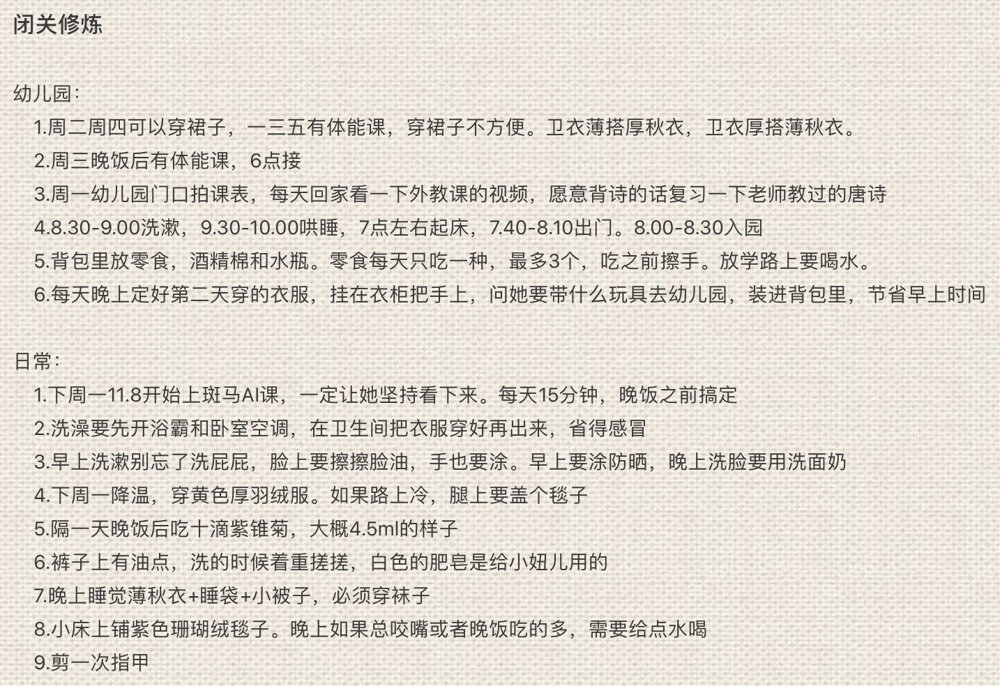
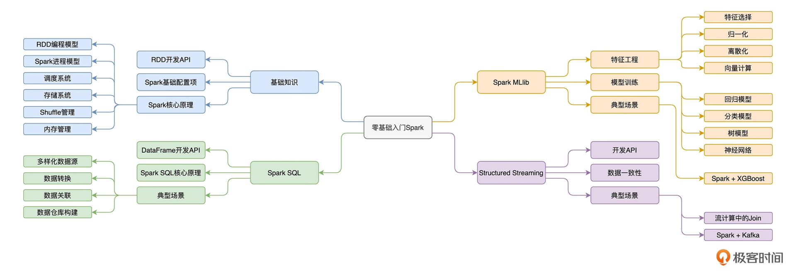

- 00 开篇词 入门Spark，你需要学会“三步走”.md
- 01 Spark：从“大数据的Hello World”开始.md
- 02 RDD与编程模型：延迟计算是怎么回事？.md
- 03 RDD常用算子（一）：RDD内部的数据转换.md
- 04 进程模型与分布式部署：分布式计算是怎么回事？.md
- 05 调度系统：如何把握分布式计算的精髓？.md
- 06 Shuffle管理：为什么Shuffle是性能瓶颈？.md
- 07 RDD常用算子（二）：Spark如何实现数据聚合？.md
- 08 内存管理：Spark如何使用内存？.md
- 09 RDD常用算子（三）：数据的准备、重分布与持久化.md
- 10 广播变量 & 累加器：共享变量是用来做什么的？.md
- 11 存储系统：数据到底都存哪儿了？.md
- 12 基础配置详解：哪些参数会影响应用程序稳定性？.md
- 13 Spark SQL：让我们从“小汽车摇号分析”开始.md
- 14 台前幕后：DataFrame与Spark SQL的由来.md
- 15 数据源与数据格式：DataFrame从何而来？.md
- 16 数据转换：如何在DataFrame之上做数据处理？.md
- 17 数据关联：不同的关联形式与实现机制该怎么选？.md
- 18 数据关联优化：都有哪些Join策略，开发者该如何取舍？.md
- 19 配置项详解：哪些参数会影响应用程序执行性能？.md
- 20 Hive + Spark强强联合：分布式数仓的不二之选.md
- 21 Spark UI（上）：如何高效地定位性能问题？.md
- 22 Spark UI（下）：如何高效地定位性能问题？.md
- 23 Spark MLlib：从“房价预测”开始.md
- 24 特征工程（上）：有哪些常用的特征处理函数？.md
- 25 特征工程（下）：有哪些常用的特征处理函数？.md
- 26 模型训练（上）：决策树系列算法详解.md
- 27 模型训练（中）：回归、分类和聚类算法详解.md
- 28 模型训练（下）：协同过滤与频繁项集算法详解.md
- 29 Spark MLlib Pipeline：高效开发机器学习应用.md
- 30 Structured Streaming：从“流动的Word Count”开始.md
- 31 新一代流处理框架：Batch mode和Continuous mode哪家强？.md
- 32 Window操作&Watermark：流处理引擎提供了哪些优秀机制？.md
- 33 流计算中的数据关联：流与流、流与批.md
- 34 Spark + Kafka：流计算中的“万金油”.md
- 用户故事 小王：保持空杯心态，不做井底之蛙.md
- 结束语 进入时间裂缝，持续学习.md
结束语 进入时间裂缝，持续学习
你好，我是吴磊。
时间过得真快，不知不觉，就到了要和你说再见的时候。首先要感谢你们的支持和陪伴，坦白地说，现在的我，有些恍惚，不敢相信专栏已经结束了。
从7月份开始筹备《零基础入门Spark》这门专栏以来，赶稿子、改稿子、录制音频、回复留言，这些任务已经变成了我每天的日常。回忆起这4个月的经历，我脑海中闪现出的第一个词语，就是“夹缝中求生存”。
为什么说是夹缝中求生存呢？作为一名有家庭的中年职场男来说，工作与家庭的双重“夹击”，让原本就有限的时间和精力变得更加“捉襟见肘”。工作的重要性不言而喻，它是我们个人发展的基础，自然需要全力以赴。而咱们国人也讲究“家事如天”，所以家里再小的事情，优先级也远超任何其他事情。
毫无疑问，一天下来，工作与家庭就占据了大部分时间。这样算下来，如果把时间比作是一面墙的话，那么一天24小时，留给我专心写专栏的时间，就像是墙上的一道夹缝或是一道裂缝。
记忆最深刻的，是11月初的那两周。由于工作的原因（党政机关），妻子需要集中封闭两周，她和我们处于完全失联的状态。那么自然，照顾娃的生活起居的“重任”，就落到了我的肩上。在“闭关”前，妻子甚至特意为我这个“大老粗”，列出了一份详细的清单，上面洋洋洒洒地记录着每一天的日常。还没生儿育女的同学就别看了，容易劝退。

古语云：“取乎其上，得乎其中；取乎其中，得乎其下”。看到妻子列出的这份“取乎其上”的清单，我就知道，以我对于闺女脾气的了解、以及我那粗线条的性格，我一定会把这份清单执行得“得乎其下”。
原因很简单，这份清单的最佳候选人应当是全职奶爸，而我显然并不是。因此，在执行层面，免不了要打折扣。我只好围绕着“让娃吃饱、穿暖、不着急、不生气、不生病”的大原则，尽可能地参考妻子给出的Best Practices，来个“曲线救国”。
举例来说，为了让娃睡个安稳觉，也为了我自己能早点赶稿子，我只好祭出独创的“扛娃入睡”大法。我会扛着她在屋子里左晃右晃、溜达来溜达去，最后小心地把她移到床上。
说真的，保证娃儿在哄睡过程中不被上下文（体感温度，光线变化，声波抖动等）的切换惊醒，是一件比拆装炸弹还要精细的作业。孩子是天生的多功能传感器，能够捕获外界多种信号源，而且捕获信号后她回调什么函数（仅仅翻个身，还是哭喊出来）来响应你，全看造化。
哄睡是个技术活儿，更是个体力活。这之后，我基本上已经是腰酸、背痛、腿抽筋，就差瘫倒在地上了。可问题是，时间都被工作和带娃占据了，稿子什么时候写呢？
熬夜的方案看似可行，牺牲睡眠时间，来赶稿子。但是，我不敢这么做，并不是我不肯吃熬夜的苦，而是我要保证内容生产的质量，而且也担心第二天因为精力涣散、在送娃的路上有所闪失。
所以在多个重要且紧急的事情同时压在身上的时候，我会更加注重睡眠质量，只有保持精力充沛，才有可能“多进程工作”。
在常规时间被占满的情况下，我只好钻进时间裂缝，也就是利用零散时间完成片段。对我来说，能利用的碎片化时间，就是上下班的地铁通勤。从家到公司，每天来回大概要两个小时，除去换乘的时间，满打满算，还剩一个多小时让我可以用拇指在手机上码字。
尽管地铁上的环境嘈杂而又拥挤，不过我发现，人在压力之下反而更容易专注，那段时间，我每天在地铁上都能码出800字左右的片段。
为了让你更轻松地学会Spark，我还会主动思考有什么生活化的比喻或是类比。专栏里工地搬砖、斯巴克集团的故事，以及玻璃杯牛奶等等例子，不少都来自通勤时的灵光一闪。到了晚上，或是周末，我会把一周积累的片段，系统化地进行整理、配图、配代码、加注释，并最终编辑成一篇完整的文稿。
现代人的工作和生活节奏都很快，我们的时间被切割得不成样子。人们总是拿时间过于细碎作为拒绝学习的理由：“上下班通勤不过 2 个小时，中间还要换乘几次，思路总被打断，根本没法集中注意力学什么东西，还不如刷刷视频呢！”
然而实际上，系统化的知识体系与碎片化的内容摄取，并不冲突。构建知识体系，确实需要大段的、集中的时间，但是一旦建立，体系内的一个个知识点，完全可以利用碎片化的 20-30 分钟来搞定——番茄时间以 25 分钟为单位还是有科学依据的。
以Spark MLlib为例，经过那个模块的学习，想必你会觉得，Spark MLlib支持的特征处理函数和模型算法好多啊，数量多到让人想从入门到放弃的地步。但是，在一番梳理之下，我们不难发现，不同的特征处理函数也好，模型算法也好，它们都可以被归类到某一个范畴中去。至于不同的类别之间的区别与联系，咱们在课程中都做了系统化的梳理。
因此，要想掌握Spark MLlib，其实咱们不需要每天刻意抽出大段的时间去学习。不太谦虚地说，专栏里的Spark MLlib模块，已经足够系统化，从范畴划分到适用场景，从基础分类到典型案例解析。
通过这样的“分类指南”，咱们已经掌握了Spark MLlib的主要脉络。接下来我们需要做的事情，就是利用碎片化的时间，钻进时间裂缝，去学习每一个具体的函数或是模型算法，为已有的知识体系添砖加瓦。
Spark MLlib模块如此，Spark整体的学习也道理相通。关键在于，上了一天班，累得跟三孙子似的，你是否还愿意钻进时间裂缝、利用一切空余时间，以水滴石穿的毅力、持之以恒地完善你的知识体系。

实际上，像这种时间裂缝，并不仅仅是被动的通勤时间，在工作中，我们完全可以根据需要，主动地把时间切割为一个又一个裂缝。在每一个裂缝中，我们只专注于一个事件，不接受任何干扰。
比方说，在每天工作的8小时里，我们可以切割出来多个不连续的coding time，在这些时间里，我们不理会任何的即时消息，只醉心于编写代码。当然，从这8小时中我们也可以切割出来多个meeting裂缝，这时我们暂且不管是不是还有个bug需要修复，只专注于讨论、沟通以及如何说服对方。
总之**，时间裂缝的核心要义就是专注，100%专注于一件事情**。这其实有点像CPU的工作原理，CPU的时钟周期是固定的，每个时钟周期，实际上只能处理一个任务。串行的工作方式，看上去很笨，但是一天下来，你会发现这颗CPU实际上做了许多的事情。
拿我自己来说，在过去的4个月里，时间裂缝还帮我读完了一本书《清醒思考的艺术》、完成了一门极客时间课程[《技术管理实战36讲》]。在忙碌于产出的同时，还能有持续性的输入，我心里会觉得非常踏实，也会觉得很开心。
做一名坚定的（技术内容）生产者，是我为自己设立的长期目标。而要想持续地输出高质量的内容，持续学习必不可少。水，柔弱而又刚强，充满变化，能适应万物的形状，且从不向困难屈服。李小龙就曾经说过：“Be water, my friend”。
让我们抓住每一个成长精进的契机，进入时间裂缝，持续学习，与君共勉。
最后，我还给你准备了一份毕业问卷，题目不多，两分钟左右就能填好，期待你能畅所欲言，谢谢。
© 2019 - 2023 Liangliang Lee. Powered by Vert.x and hexo-theme-book.